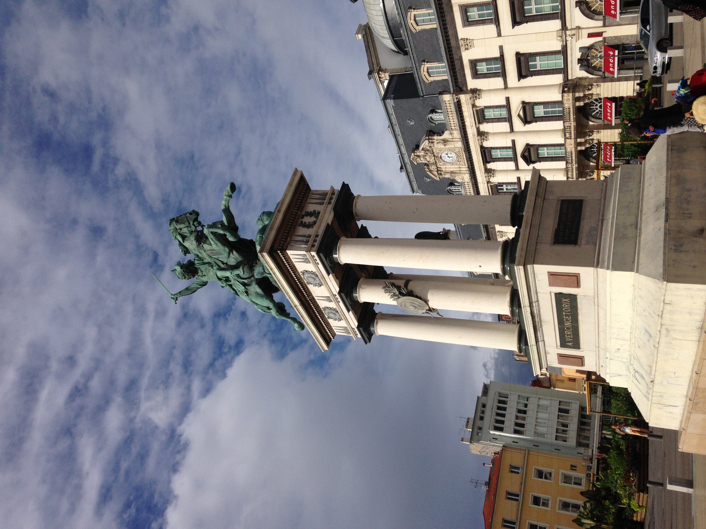
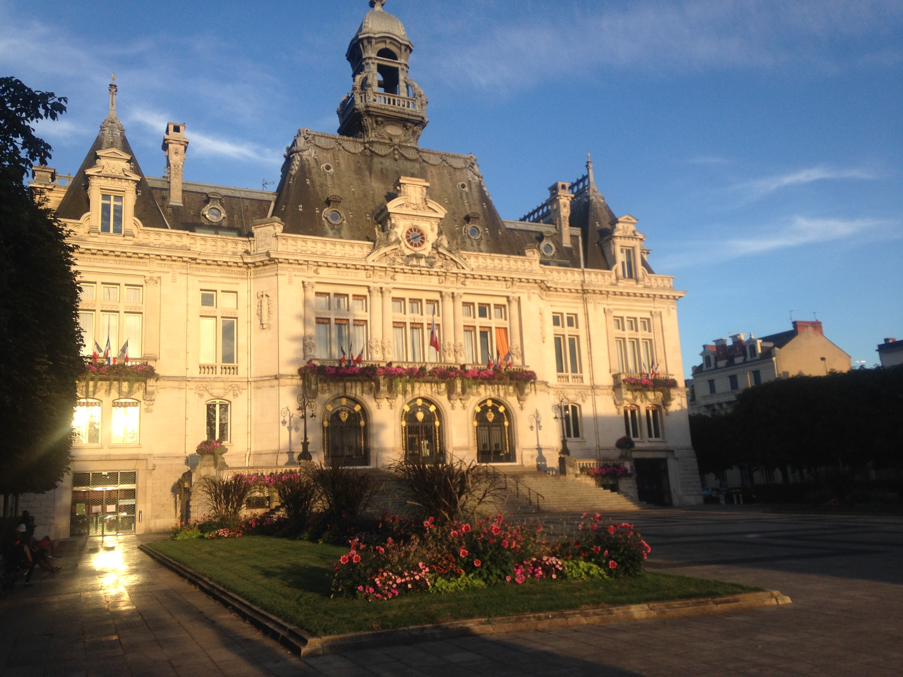
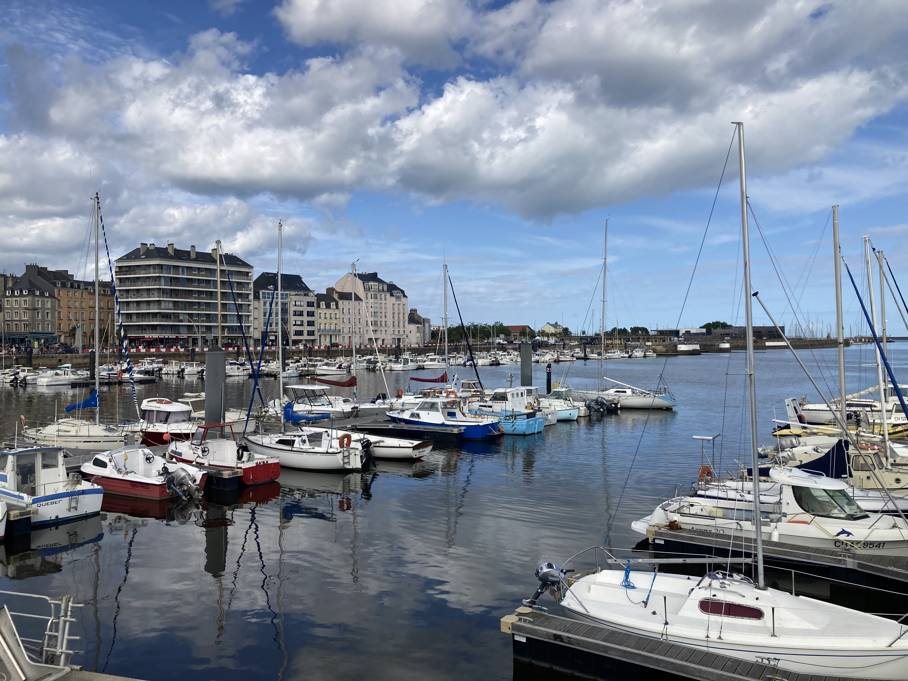
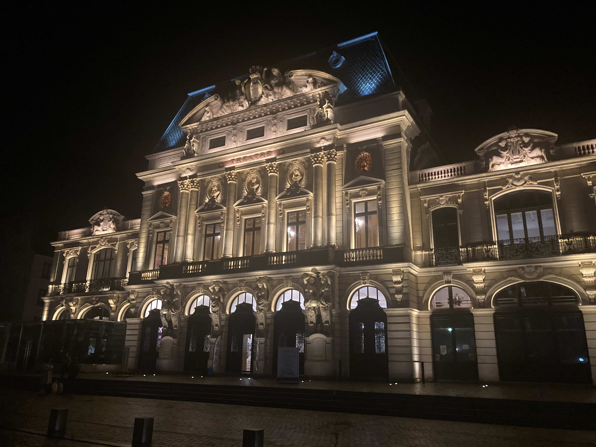
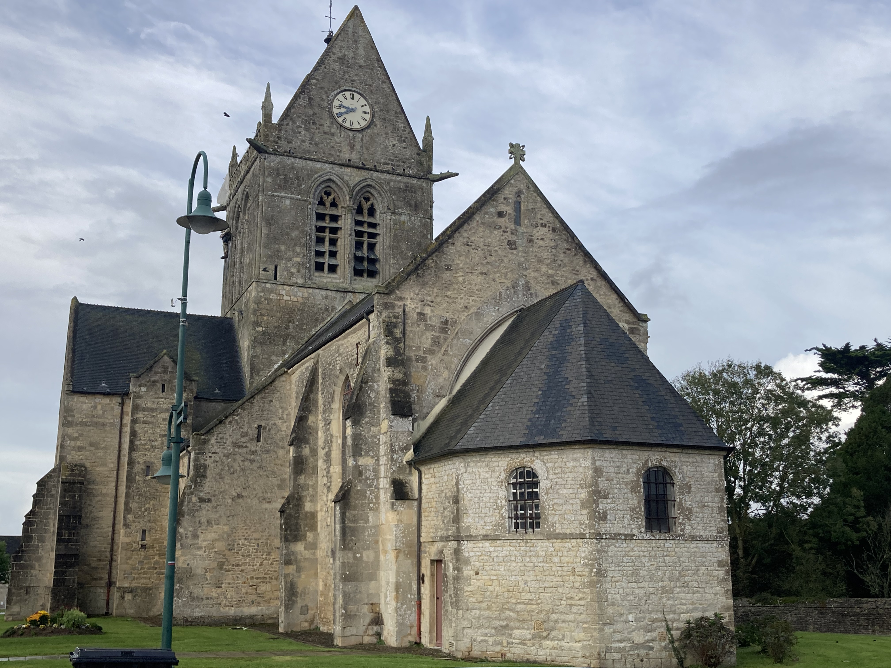

France —
our home away from home
We've been visiting France since 2006 and try to go every year — and with Nicola being a French teacher, we have a very good excuse! From the Celtic roots of Brittany (with medieval Dinan and seaside Dinard) and the moving D-Day beaches of Normandy to the châteaux of the Loire Valley, the prehistoric Lascaux Caves, volcanic Clermont-Ferrand, the food capital Lyon, Flemish Lille, the lavender fields of Provence, the glamour of the Côte d'Azur and the fairytale streets of Alsace — France never stops giving. It is one of the great travel destinations in the world and one we keep coming back to.
What France has given us:
Ten regions down — our France map so far
A quick look at the regions of France we've properly explored between us — watch it fill in below.
👆 Tap any region below to read more about it
Twenty years of falling in love with France — and still going.
We first visited France in 2006 and have been going back almost every year since. Nicola's background as a French teacher gives us a brilliant advantage — the language opens doors that stay closed for most visitors. Being able to have genuine conversations with locals, ask questions, understand regional history and discover hidden gems transforms every trip into something far more authentic.
Our France is not just Paris — it never has been. Over the years we've explored almost every corner of the country, discovering that each region has its own identity, traditions, cuisine and history.
We've spent time in the Celtic heartland of Brittany, where the language, music and traditions feel surprisingly familiar to Irish visitors. Nicola even spent a month there in 2010, driving the coastal roads and uncovering the kind of small towns that rarely appear in guidebooks but leave lasting memories. Plancoët remains one of our favourite discoveries. Medieval Dinan — with its cobbled streets, half-timbered houses and centuries-old streets built for wandering — and elegant Dinard just across the water from Saint-Malo, an old-school seaside resort with beautiful villas, sandy beaches and a touch of French Riviera glamour on the Brittany coast, are two more Breton stops that really stayed with us.
History lovers will find no shortage of unforgettable experiences in France. We've stood on the beaches of Normandy, where the events of D-Day come vividly to life, and explored the prehistoric Lascaux Caves in the Dordogne, home to some of the world's most remarkable Ice Age cave paintings. Walking through the carefully recreated cave complex offers a fascinating glimpse into human life over 17,000 years ago.
The Loire Valley has become one of our favourite regions, famous for its fairytale châteaux, elegant gardens and vineyards. From magnificent Renaissance castles to charming riverside towns, it's a part of France that feels like stepping into another era and is perfect for anyone who enjoys history, architecture and scenic drives.
We've also visited the spa town of Vichy, known for its grand Belle Époque architecture, elegant parks and famous mineral waters. While its Second World War history makes it an intriguing destination, today it's a peaceful place to stroll along the river or relax in one of France's best-known thermal spa towns.
Also in the Auvergne, Clermont-Ferrand showed us a very different side of France. The city is famous for its striking black volcanic-stone cathedral, which dominates the centre, while the surrounding landscape is shaped by the ancient volcanoes of the Chaîne des Puys. It's not one of the first places most people think of for a French city break, which is probably part of what makes it so interesting to visit.
Lyon completely won us over with its food scene. Often regarded as France's gastronomic capital, it's packed with traditional bouchons, lively markets and beautiful Renaissance streets in Vieux Lyon. It's one of those cities where simply wandering around and stopping for lunch becomes a highlight in itself.
In northern France we've explored Lille, a city that often surprises first-time visitors. With its beautiful Flemish architecture, impressive Grand Place, bustling cafés and excellent museums, it offers a completely different feel to much of the rest of France and makes a fantastic short city break.
Further south we've driven through Provence, one of the most beautiful regions we've ever visited. Rolling vineyards, picturesque hilltop villages, bustling markets and endless lavender fields combine to create one of France's most iconic landscapes. Driving through the lavender in full bloom with the windows down remains one of our favourite travel memories.
In 2024 we continued along the Côte d'Azur, exploring Cannes and Nice before taking the incredibly inexpensive train to Monaco. Within minutes the scenery changes from laid-back beach resorts to one of the world's most glamorous destinations, making it one of the best-value day trips we've ever experienced.
Most recently, we discovered the beautiful Alsace region, where French and German cultures blend seamlessly. Based in the colourful town of Colmar, we wandered its half-timbered streets, visited medieval villages along the Alsace Wine Route, sampled outstanding local wines and learned about the fascinating history that has shaped this unique corner of France. Crossing the border into nearby Basel, Switzerland, meant we experienced two countries in a single trip.
We've also made the pilgrimage to Lourdes, admired the breathtaking spectacle of Mont Saint-Michel rising from the tidal bay and, over the years, visited countless castles, cathedrals, vineyards and villages that remind us why France remains one of our favourite countries to explore.
France isn't always the easiest destination for gluten-free travellers. Bread and pastries are central to French cuisine and dedicated gluten-free options aren't as common as in some other European countries. However, with a little planning, some research and Nicola's French helping us communicate our dietary requirements, we've always managed to eat exceptionally well and enjoy some fantastic local food.
For us, France is a country that keeps drawing us back. Whether you're interested in history, wine, food, culture, beaches, mountains or simply discovering beautiful villages, France has an incredible diversity that's difficult to match anywhere else in Europe. Every return visit uncovers somewhere new, another fascinating story and another destination we can't wait to share.
The highlights — France region by region
Celtic, proud and utterly beautiful. Brittany feels familiar to Irish visitors in a way that's hard to explain — the language echoes Gaeilge, the music is similar, the coastline is dramatic and the people are warm. Plancoët is a brilliant base.
One of Brittany's prettiest medieval towns — cobbled streets, half-timbered houses and a historic centre packed with character. Made for wandering, with little shops, cafés and history around every corner.
Just across the water from Saint-Malo — an elegant seaside resort with beautiful old villas, sandy beaches and gorgeous coastal views. A little bit of French Riviera glamour on the Brittany coast.
One of the most moving experiences you can have in Europe. Standing on Omaha Beach, visiting the American Cemetery — the scale of what happened here only becomes real when you're actually there. A must-do.
Home to some of the world's most remarkable Ice Age cave paintings. The carefully recreated cave complex offers a genuinely fascinating glimpse into human life over 17,000 years ago — a must for anyone interested in prehistory.
One of the most jaw-dropping sights in all of France — a medieval abbey perched on a tidal island, rising from the bay like something from a fairy tale. Extraordinary at any time of day but magical at dusk.
A genuinely lovely city with brilliant food, friendly people and more to see than you can fit into any one visit. The museums alone could keep you busy for a week. Don't believe the rude Parisian stereotype — it's not true.
Château after château set along a beautiful river valley — Chambord, Chenonceau, Villandry. Entry tickets can be pricey but the châteaux are stunning and absolutely worth every cent. A guided tour is the best way to see several in one trip.
A spa town known for its grand Belle Époque architecture, elegant parks and famous mineral waters. Its Second World War history makes it an intriguing destination, and today it's a peaceful place to stroll along the river or relax in the thermal baths.
A very different side of France — a striking black volcanic-stone cathedral at the heart of the city and the ancient volcanoes of the Chaîne des Puys shaping the landscape all around. An off-the-beaten-path highlight in the Auvergne.
Often regarded as France's gastronomic capital. Traditional bouchons, lively markets and beautiful Renaissance streets in Vieux Lyon make this a city where wandering around and stopping for lunch becomes a highlight in itself.
Beautiful Flemish architecture, an impressive Grand Place, bustling cafés and excellent museums give Lille a completely different feel to much of the rest of France. A fantastic short city break in the north.
Lavender fields stretching to the horizon, hilltop villages, brilliant markets and food that tastes of sunshine. Driving through Provence in bloom with the windows down is one of the great travel experiences.
The Côte d'Azur delivers everything it promises — beautiful coastline, incredible food, glamorous atmosphere and a pace of life that immediately makes you feel like you're on holiday. Loved both cities in 2024.
One of the best value day trips in Europe — a 20 minute train from Nice for just a few euros each way. What you get at the other end: superyachts, the Casino de Monte-Carlo, the Prince's Palace and pure glamour. Absolutely worth it.
Where French and German cultures blend seamlessly. Half-timbered streets, medieval villages along the Alsace Wine Route and outstanding local wines — and Colmar's Christmas markets are pure magic. Easy to combine with a day in nearby Basel, Switzerland.
We went in 2016 and it was fantastic — magical atmosphere, great rides and so much more accessible from Ireland than the American Disney parks. Book tickets in advance on Klook and save money on the gate price.
France in pictures
From Brittany and Normandy to the south of France — a glimpse of the country we keep coming back to.


.jpg)





Book a Loire Valley tour through TourRadar
The Loire Valley has so many châteaux that having a guided tour take care of the route and logistics makes a massive difference — you see far more and spend your time actually enjoying it rather than figuring out where to go next.
Entry tickets to the Loire châteaux can be expensive individually, but a properly guided tour covers the highlights efficiently and puts the history and architecture in context in a way that's hard to replicate on your own. This is one of those destinations that genuinely rewards having expert guidance.
Disclosure: This is an affiliate link. If you book through it we may earn a small commission at no extra cost to you.
Disneyland Paris tickets on Klook 🎫
Book your Disneyland Paris tickets on Klook and save money on the gate price. Booking in advance means you skip the ticket queues and often get a better deal — one less thing to stress about on the day.
We went in 2016 and it was brilliant — the magic is very real and it's so much more accessible from Ireland than the American Disney parks. A day well spent.
Disclosure: If you book through this link we may earn a small commission at no extra cost to you.
Book an Alsace Christmas Market tour on TourRadar 🎄
Alsace at Christmas is pure magic. Colmar's half-timbered streets strung with lights, mulled wine, wooden chalets and centuries-old markets across the region make this one of the most beautiful times of year to visit — and a guided tour takes care of the route between towns so you can just enjoy it.
This is the same region we fell in love with on our own trip to Colmar, and it's easy to combine with a day across the border in Basel, Switzerland.
Disclosure: This is an affiliate link. If you book through it we may earn a small commission at no extra cost to you.
Find your hotel in France on Klook
Great deals on hotels across France — from Paris city centre to Brittany coastal stays, Loire Valley château country and the Côte d'Azur.
Disclosure: If you book through these links we may earn a small commission at no extra cost to you.
Book France experiences with GetYourGuide
D-Day beach tours, Paris city tours, Loire château visits, Provence lavender tours, Côte d'Azur excursions and much more.
Disclosure: If you book through these links we may earn a small commission at no extra cost to you.
Common questions
France FAQ
What to pack for France
France packing essentials — what we'd bring
France varies enormously by region and season — summer on the Côte d'Azur needs sun protection and light clothing, while Brittany and Normandy can be cool and breezy even in summer. These are the things we'd pack without hesitation.
Stay connected across France without roaming charges — essential for maps, bookings and navigation especially when driving through Brittany or the Loire Valley.
View on Amazon →Essential for the Côte d'Azur and Provence — the Mediterranean sun is strong and you'll be outdoors a lot. High SPF is a must for beach and sightseeing days.
View on Amazon →Perfect for château visits, beach days, D-Day beach tours and city exploring — keeps you hands-free and organised throughout the day.
View on Amazon →Long days sightseeing drain your phone fast — a power bank keeps you going for maps, photos and tickets all day.
View on Amazon →France uses Type E plugs — different to Ireland. Don't get caught out on day one with nothing charged after your flight.
View on Amazon →Brilliant for long days in the Provence sun, beach days on the Côte d'Azur and open-air château gardens in the Loire Valley.
View on Amazon →Breathable and cool for warm southern French days — and smart enough for dinner out in Nice or Cannes. Perfect for the heat without looking too casual.
View on Amazon →Essential for Brittany and Normandy even in summer — the Atlantic coast can be breezy. Also useful for cooler evenings anywhere in France.
View on Amazon →Disclosure: These are Amazon affiliate links. If you buy through them we may earn a small commission at no extra cost to you.
Planning your own France trip?
France rewards every type of traveller — whether you want history, beaches, food, châteaux or pure relaxation. Start with the Loire Valley and work your way south. You will not run out of reasons to go back.
Affiliate disclosure: if you book through our links we may earn a small commission at no cost to you. We only recommend trips and experiences we'd be happy to stand over.